CONCEPTOR
Record ideas. Twelve tracks, with amps, pedals, effects, a drum programmer and mastering built in. Version 0.4.3: landscape layout with the transport in the top bar, mixing-desk channel strips, record two tracks at once, Drop In, 7-band EQ, nine pedals that can be re-ordered, guitar tuner, Lt. Joe Bookman library and playlists.
Works in the browser on iPhone, iPad, Android phones, Mac and PC. Add it to the home screen to use it like an app.
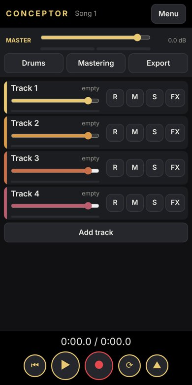
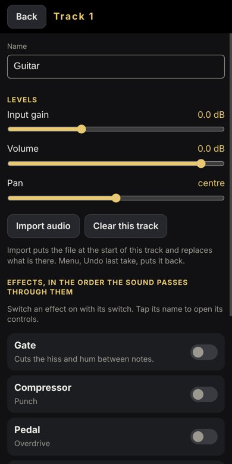
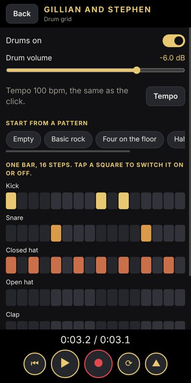
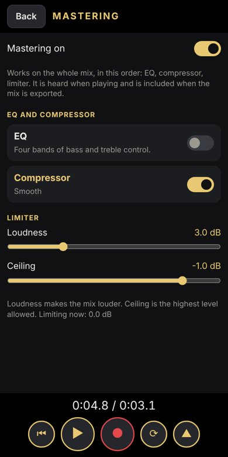
Put Conceptor on your device
Choose your device. The steps show one at a time.
Open this page in Safari
- Use the Safari app (the blue compass).
- Go to ftumch78.github.io/conceptor-web
- If you are already in Safari, carry on.
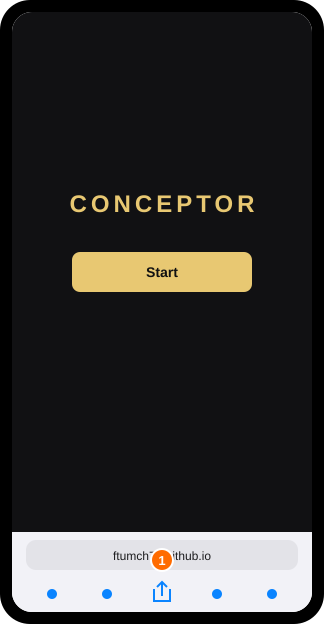
Open Conceptor
- Tap the gold Open Conceptor button at the top of this page.
- The Conceptor start screen opens.
Tap the Share button
- It is the square with an arrow pointing up 1.
- iPhone: at the bottom of the screen. iPad: at the top right.
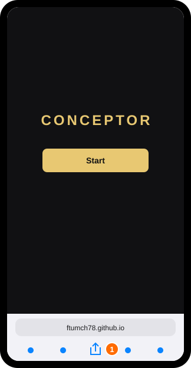
Tap Add to Home Screen
- Scroll down the list if you cannot see it.
- Tap Add to Home Screen 1.
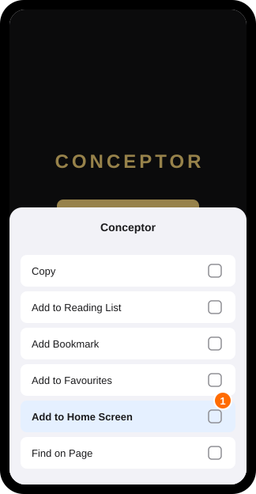
Tap Add
- Leave the name as Conceptor.
- Tap Add at the top right 1.
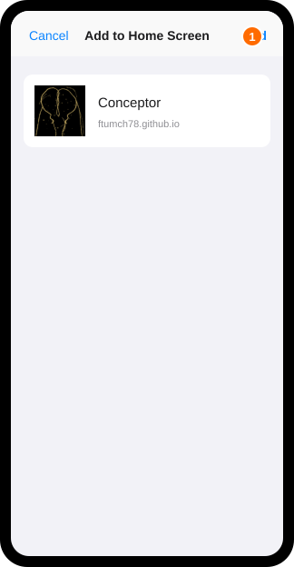
Start Conceptor from the home screen
- Tap the new Conceptor icon 1. It opens full screen, like an app.
- The first time you record, tap Allow for the microphone.
- Switch off Silent mode (the switch or Action button on the side), or Conceptor plays no sound.
- Wear headphones when recording.
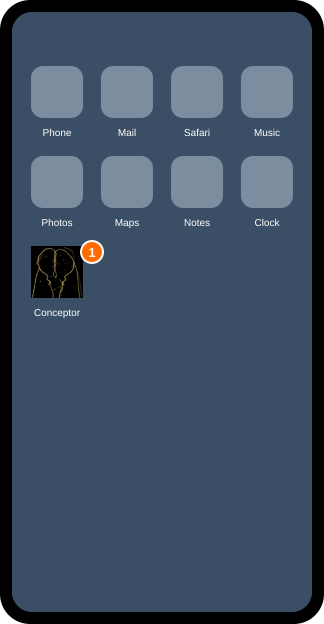
Choose: the Android app or the web app
- Android app: best timing for recording. Needs Android 8.0 or later. Download it from the GitHub release page (you need to be signed in to GitHub with access to the Conceptor repository).
- Web app: no download needed. Works in Chrome.
Full Android install steps are in the Conceptor install guide.
Web app: open Conceptor in Chrome
- Open Chrome on the phone.
- Go to ftumch78.github.io/conceptor-web
- Tap Open Conceptor.
Web app: add it to the home screen
- Tap the three dots at the top right of Chrome.
- Tap Add to Home screen or Install app.
- Tap Install.
- Start Conceptor from its new icon.
Windows: install the Conceptor app
- Windows 10 or 11.
- On the download page, click Conceptor-0.4.3-Windows-Setup.exe.
- Open the downloaded file.
- If a blue box says "Windows protected your PC": click More info, then Run anyway 2.
- Conceptor installs and opens. It has an icon on the desktop and in the Start menu.
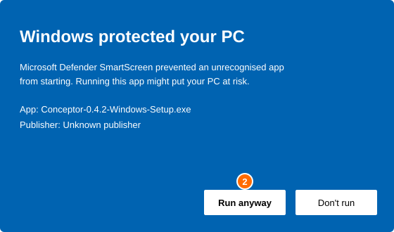
Mac: install the Conceptor app
- macOS 10.15 Catalina or later. Intel or Apple Silicon.
- On the download page, click Conceptor-0.4.3-Mac.dmg.
- Open the downloaded file. Drag Conceptor onto Applications 1.
- The first time only: in Applications, right-click (or Control-click) Conceptor, click Open, then Open again.
- Click OK when it asks for the microphone.
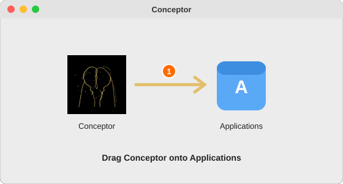
Or use it in Chrome or Edge
- No download needed. Go to ftumch78.github.io/conceptor-web and click Open Conceptor.
- To give it its own window: click the small install icon at the right end of the address bar 1, then Install 2.
- Songs in the browser and songs in the installed app are kept separately. Use the Library sync folder, or Export and Import Audio, to move them across.
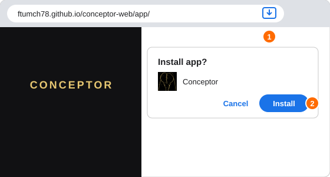
Guides
- Install and update to 0.4.3 (click-through)
- Install and update to 0.4.2 (click-through)
- Install and update to 0.4.1 (older)
- Install and update to 0.4 (older)
- Install and update to 0.3 (older)
- Install instructions (PDF)
- User manual (PDF)
- Info: features and system requirements (PDF)
Songs are kept in the browser on each device. Use Export to keep copies of your recordings. Conceptor uses the LAME encoder (lame.sourceforge.net) for MP3 export.